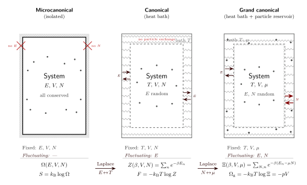

微正则、正则、巨正则该怎么挑?
上一节里我们已经让一个看起来平淡无奇的配分函数 $Z = \sum_n e^{-\beta E_n}$ 承担起全部热力学 —— 只要手上有 $\log Z$, 能量、熵、比热、自由能就都能直接微分出来. 但是这里面有一个被轻轻略过的前提: 我们默许了系统能自由地跟一个温度为 $T$ 的热浴交换能量. 一杯放在桌上的热咖啡也许满足这个前提; 但要是你把它装进保温瓶封死, 能量就是固定的, 不是温度. 要是瓶盖没拧紧, 水蒸气往外跑, 连粒子数都不守恒了. 同一个物理系统, 边界条件换一换, 背后的统计框架也要换一套.
这不是学术洁癖. 在实际计算里, 固定能量往往意味着要去数一个让人绝望的等能量面积 $\Omega(E)$, 而固定温度只要做一个一维求和 $Z(\beta)$; 固定粒子数在量子统计里动辄塞进一个组合爆炸, 而让化学势 $\mu$ 取主动权, 巨正则的求和瞬间分解成单粒子的乘积. 所以问题不止"是什么固定什么涨落", 而是"哪一种最好算". 三种系综的选择就是这么一件实用主义的事.
但这里立刻浮出一个认真的问题: 既然计算方便程度完全不同, 选哪个系综会不会影响答案? 如果一杯咖啡的比热容在"隔绝算"和"恒温算"下得到不一样的数字, 热力学就塌了. 这一节的全部工作就是说明为什么不会塌 —— 并且把"不会塌"这件事严格地推出来, 不挥手.
一、三种系综的定义 —— 谁固定, 谁涨落
先把三种理想化列清楚. 一个宏观系统和外界的能量交换、粒子交换, 两个开关各有"通"与"断", 理论上组合出四种. 第四种 (能量通但粒子断 + 开不开另说) 是压强系综 $(T, p, N)$, 常用于化学; 统计力学教材里的主角通常是前三种.
微正则 $(E, V, N)$ 固定: 系统与外界完全隔绝, 能量、体积、粒子数都是守恒量. 可及的微观态数 $\Omega(E)$ 就是在能量壳层 $E$ 上所有与约束相容的相空间体积. Boltzmann 的墓碑公式
$$ S(E, V, N) = k_{\mathrm B}\log\Omega(E, V, N) $$
直接把熵等同于微观态计数的对数. 温度不是独立变量, 而是派生量: $1/T = \partial S/\partial E$.
正则 $(T, V, N)$ 固定: 系统嵌在一个温度为 $T$ 的大热浴里, 能量可以进出, 粒子不行. 配分函数
$$ Z(\beta, V, N) = \sum_n e^{-\beta E_n} = \int dE\,\Omega(E)\,e^{-\beta E}, $$
自由能 $F = -k_{\mathrm B}T\log Z$. 这里的 $\beta = 1/k_{\mathrm B}T$ 是外给的, 能量 $E$ 反而是一个随机变量 —— 它围绕一个平均值 $\langle E\rangle$ 做微小涨落.
巨正则 $(T, V, \mu)$ 固定: 系统同时与一个热浴和一个粒子库接触, 能量和粒子数都自由交换. 巨配分函数
$$ \Xi(\beta, V, \mu) = \sum_{N=0}^{\infty}\sum_n e^{-\beta(E_n - \mu N)} = \sum_{N=0}^{\infty}e^{\beta\mu N}\,Z(\beta, V, N), $$
巨势 $\Omega_{\mathrm g} = -k_{\mathrm B}T\log\Xi = -pV$. 粒子数 $N$ 这时也成了随机变量.
注意一个规律: 每"松开"一个守恒量 ($E$, 然后 $N$), 就把对应的广延量换成它的共轭强度量 ($T$, 然后 $\mu$) 当成独立变量. 这一步在数学上就是 Legendre 变换, 在统计上就是从 $\Omega$ 到 $Z$ 到 $\Xi$ 的 Laplace 变换. 这两件事是同一件事的两种表达; 接下来第二节我们就把"它是同一件事"严格地推出来.

二、等价性的严格推导 —— Laplace 变换与鞍点法
现在正面做 deepdive 这一节的 cliché: 三种系综的等价性. 教科书里常常一句"热力学极限下三者等价"带过, 其实背后是一条很具体、很漂亮的数学路径. 我们从微正则推到正则, 再简单提一下正则推到巨正则.
第一步, 把 $Z$ 写成 $\Omega$ 的 Laplace 变换. 正则配分函数对离散能级求和, 但我们可以把求和按能量分桶: 落在 $[E, E+dE]$ 能量壳层里的态数就是 $\Omega(E)\,dE$, 于是
$$ Z(\beta) = \int_{E_0}^{\infty}dE\,\Omega(E)\,e^{-\beta E}. \tag{1} $$
这是一个关于 $E$ 的单边 Laplace 变换, $\beta$ 是 Laplace 变量. $\Omega(E)$ 和 $Z(\beta)$ 互为共轭: 只要知道其中一个, 原则上就能反解另一个 (反变换是 Bromwich 积分). 这一步纯粹是恒等式, 还没有做任何近似.
第二步, 把被积函数写成"指数里一个函数"的形式. 按微正则的定义 $\Omega(E) = e^{S(E)/k_{\mathrm B}}$ (把 $\Omega$ 当成 $e^{S/k}$ 的简写), (1) 式化为
$$ Z(\beta) = \int dE\,\exp\!\Big[\tfrac{1}{k_{\mathrm B}}\big(S(E) - E/T\big)\Big], $$
其中 $T = 1/(k_{\mathrm B}\beta)$. 定义 $\varphi(E)\equiv S(E) - E/T$, 即
$$ Z(\beta) = \int dE\,e^{\varphi(E)/k_{\mathrm B}}. $$
这里 $\varphi$ 是广延量: $S\sim N$, $E/T\sim N$, 所以 $\varphi\sim N$. 也就是说指数上是一个 $O(N)$ 的函数, 而我们关心的是 $N\sim 10^{23}$ 的极限 —— 这正是鞍点法 (最陡下降法) 最得意的场景.
第三步, 鞍点条件给出温度. 当指数上的函数随 $N$ 线性缩放时, 积分贡献几乎全部来自使 $\varphi(E)$ 取极大的那个点 $E^*$:
$$ 0 = \varphi'(E^*) = S'(E^*) - 1/T. $$
这一个条件其实就是
$$ \frac{\partial S}{\partial E}\bigg|_{E=E^*} = \frac{1}{T}. \tag{2} $$
这正是热力学里温度的定义! 换句话说: 选择外界温度 $T$ 之后, 正则系综"自动"把自己锁定在使微正则下 $\partial S/\partial E = 1/T$ 的那个 $E^*$ 上. 两套系综给出相同的内能, 不是运气, 是鞍点条件在两边都是一模一样的方程.
第四步, 鞍点附近做高斯展开, 得到 $F$. 把 $\varphi$ 在 $E^*$ 附近展到二阶:
$$ \varphi(E) = \varphi(E^*) + \tfrac12\varphi''(E^*)(E-E^*)^2 + \cdots $$
而 $\varphi''(E^*) = S''(E^*) = -1/(T^2 C_V)$, 其中 $C_V$ 是等容热容 (正的, 所以 $\varphi'' \lt 0$, 真是极大不是极小 —— 这正是稳定性的体现). 把这个高斯近似代回积分:
$$ Z \approx e^{\varphi(E^*)/k_{\mathrm B}}\int dE\,\exp\!\Big[\frac{\varphi''(E^*)}{2k_{\mathrm B}}(E-E^*)^2\Big] = e^{\varphi(E^*)/k_{\mathrm B}}\sqrt{\frac{2\pi k_{\mathrm B}}{|\varphi''(E^*)|}}. $$
前因子是指数上一个 $O(N)$ 的量, 后面的根号是一个 $O(\sqrt N)$ 的量. 取对数:
$$ \log Z = \frac{\varphi(E^*)}{k_{\mathrm B}} + \tfrac12\log\!\frac{2\pi k_{\mathrm B}}{|\varphi''(E^*)|}. $$
第一项 $O(N)$, 第二项 $O(\log N)$ —— 在热力学极限下第二项完全可以丢掉. 于是
$$ -k_{\mathrm B}T\log Z = -T\varphi(E^*) = E^* - TS(E^*). $$
左边按定义就是 Helmholtz 自由能 $F$, 右边正是 Legendre 变换 $F = U - TS$! 也就是说: 从微正则到正则走一步 Laplace 变换, 在大 $N$ 下做鞍点近似, 自动把"对 $E$ 做 Legendre 变换"这件热力学动作给做了. 两套框架给出同一套状态函数, 而且彼此换算就是共轭变量 $E\leftrightarrow T$ 的 Legendre 对偶.
从正则到巨正则也是一模一样的剧本: 把 (1) 换成对 $N$ 的 Laplace 变换 $\Xi(\mu) = \sum_N Z(N)e^{\beta\mu N}$, 指数上出现 $\beta\mu N + \log Z(N) = \beta\mu N - \beta F(N)$, 鞍点条件 $\mu = \partial F/\partial N$ 给出化学势, 结果 $-k_{\mathrm B}T\log\Xi = F - \mu N = \Omega_{\mathrm g}$ 又是 $F$ 对 $N$ 的 Legendre 变换. 三个系综用同一座桥梁串成一条 Legendre 链.
三、涨落大小 —— 为什么 $10^{23}$ 个粒子看不出差别
"平均值相等"是一回事, "涨落也可以忽略"是另一回事. 前者只给出第一阶矩, 后者才说明系综选择在实验上真的无关紧要. 我们来算能量的相对涨落.
在正则系综里, 能量的方差是一个已经推过的恒等式:
$$ (\Delta E)^2 = \langle E^2\rangle - \langle E\rangle^2 = \frac{\partial^2\log Z}{\partial\beta^2} = -\frac{\partial\langle E\rangle}{\partial\beta} = k_{\mathrm B}T^2 C_V. $$
热容 $C_V$ 是广延量, $C_V\sim N k_{\mathrm B}$; 能量也是广延量, $\langle E\rangle\sim N k_{\mathrm B}T$. 于是相对涨落
$$ \frac{\Delta E}{\langle E\rangle} \sim \frac{\sqrt{k_{\mathrm B}T^2\cdot N k_{\mathrm B}}}{N k_{\mathrm B}T} = \frac{1}{\sqrt N}. $$
这条 $1/\sqrt N$ 就是系综等价性的"定量保证". 把数字代进去: $N = 10^{23}$ 给 $\Delta E/\langle E\rangle \sim 10^{-11.5}\approx 3\times 10^{-12}$. 也就是 1 摩尔理想气体在正则系综里, 能量跟微正则给出的固定值的相对偏差是一亿亿分之三 —— 没有任何实验手段能分辨. 这就是为什么一杯咖啡"能量固定还是温度固定"这个问题在实验上没意义: 在 $10^{23}$ 的世界里, 两者给出同一个数字到小数点后十一位.
换一个场景: 一个纳米级别的分子机器, 比如 kinesin 或 ATP 合酶, 涉及的原子数 $N\sim 10^4$, 相对涨落 $\sim 1/\sqrt{10^4} = 10^{-2}$, 也就是 1% 量级. 这时候把它们当成"恒温热浴中的正则系综"算平均能量, 和把它们当成"隔绝的微正则"算, 偶然能看到 1% 的差别. 而在单分子实验里, 1% 的涨落已经是可测量信号 —— 这就是为什么非平衡统计力学 (下一部分的 Jarzynski、Crooks) 在分子生物学里这么有用.
一个具体数字: 一升水在 300 K 时的能量涨落. 一升水 $\approx 55.6$ 摩尔, $N\approx 3.3\times 10^{25}$. 内能 (相对 0 K 的热能部分) 量级 $\sim N k_{\mathrm B}T\approx 3.3\times 10^{25}\times 1.38\times 10^{-23}\times 300\approx 1.4\times 10^5$ J. 相对涨落 $1/\sqrt N\approx 1.7\times 10^{-13}$, 绝对涨落 $\Delta E\approx 2.4\times 10^{-8}$ J $= 24$ nJ. 用最灵敏的绝热量热计也看不见.
四、临界点、小系统、以及 Gibbs 的历史账
三个系综给出相同热力学的前提是鞍点法可靠, 而鞍点法可靠的前提是两条: $\varphi''(E^*)\ne 0$ 且 $N$ 大. 这两条哪条塌, 等价性就塌.
小 $N$ 破坏等价性. 上文已经举过: $N\sim 10^{4}$ 的分子体系, 正则和微正则预测会在 1% 差别. 更极端的例子, Bose-Einstein 凝聚实验里原子数 $N\sim 10^{5}\text{--}10^{8}$, 凝聚比例的涨落在不同系综下差别是显著的, 而且已经被实验分辨 (所谓"凝聚涨落之谜"). 所以小系统热力学是一个真实存在的研究领域, 不是纯粹的数学游戏.
临界点破坏等价性. 临界相变处, 序参量的关联长度 $\xi\to\infty$, 涨落跨越所有尺度, 热容 $C_V\to\infty$. 这意味着 $|\varphi''(E^*)|\to 0$ —— 鞍点变"宽", 高斯近似不再可信. 三个系综在临界点"勉强"等价: 平均值还能对上, 但涨落本身成了研究对象, 不再可以忽略. 正是这件事让临界现象成为一个独立学科, 而且各系综得到的临界指数有时会差一个非平庸的因子 (著名的"系综依赖性"讨论). 这正是本卷第三部分要正面处理的主题.
相变的一阶版本. 在一阶相变 (比如冰水共存) 处, $\Omega(E)$ 作为 $E$ 的函数出现一段"凹陷"(凹而非凸), 鞍点法给出的结果和 Legendre 变换给出的"下凸包络"不一致. 物理学用 Maxwell 等面积律把凹陷填平 —— 这是第 11 节的内容, 届时我们会看到这件事其实就是"在鞍点法里手动插入相共存条件".
历史: Gibbs 1902. 三种系综不是凭空出现的. Boltzmann 1877 年就给出了 $S = k\log W$ 的微观统计解释, 但把三种边界条件都整理成一个统一框架的是 Josiah Willard Gibbs. 他 1902 年那本 Elementary Principles in Statistical Mechanics, 严格意义上是统计力学的奠基之作. Gibbs 在书里首次用"系综"(ensemble) 这个词 —— 一个"由无数同样的复本构成的虚拟集合", 每个复本按统计权重分布 —— 并且把微正则、正则、巨正则三种分别以严格形式写下. "等价性"在 Gibbs 那里已经被意识到, 但"热力学极限"作为严格概念要等到杨振宁和李政道 1952 年关于凝结现象的两篇文章 —— 他们首次严格证明在 $N\to\infty$ 且 $V/N$ 固定的极限下, 三种系综的自由能密度收敛到同一个凸函数. 杨-李定理是现代数学物理的起点之一.
选哪个系综? 实用指南. 总结一句: 选让你算得轻松的那个.
- 封闭的力学体系、或需要纯粹计数 (组合论式问题): 微正则. 但 $\Omega(E)$ 通常要计算能量壳层积分, 解析极难.
- 系统与恒温热浴接触, 能量可交换但粒子不动: 正则. $Z$ 是一维求和, 绝大多数教科书推导都在这里做. 化学里的"等温条件"就是它.
- 量子统计 (玻色 / 费米气体), 或开放系统 (溶液、吸附、半导体): 巨正则. $\Xi$ 对粒子数的求和往往可以分解成单粒子占据数的乘积, 计算上简单得多. 化学势 $\mu$ 在这里就是那个拉格朗日乘子.
关键是: 不论你选哪个, 在热力学极限下得到的强度量 $T, p, \mu$ 都是同一套 —— 这由 (2) 式和它的兄弟 (对 $N$ 的鞍点条件) 保证. 三个系综不是"三种物理", 而是"同一套物理的三种视角"; 选择只关乎计算方便.
小结
这一节我们把"微正则、正则、巨正则"这套被无数次草草带过的术语, 放回到它应有的严格位置. 起点是边界条件 —— 系统和外界交换什么, 就把对应的量让出去, 换它的共轭强度量当独立变量. 这件事在数学上就是 Laplace 变换, 由 (1) 式写下; 在热力学上就是 Legendre 变换 $F = U - TS$. 两者是同一回事, 这一等价性由鞍点法在大 $N$ 下完成 —— 鞍点条件 (2) 式恢复温度的热力学定义, 高斯展开里 $O(\sqrt N)$ 的贡献相对 $O(N)$ 的主项可以忽略, 相对涨落 $1/\sqrt N$ 在 $N=10^{23}$ 时降到 $10^{-11.5}$, 实验上完全看不见. 于是三种系综在热力学极限下给出相同热力学. 等价性破缺只发生在两种情况: 小 $N$ (分子机器、BEC 小系统) 和临界点 (鞍点变宽). 后者正是本卷第三部分"相变与临界现象"的主题 —— 我们会看到临界点上涨落不再是个错项, 而是物理本身. 下一节先完成手头这件事: Boltzmann 因子 $e^{-\beta E}$ 凭什么非得是它? 我们用最大熵原理把它推出来.
▲